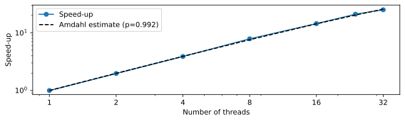
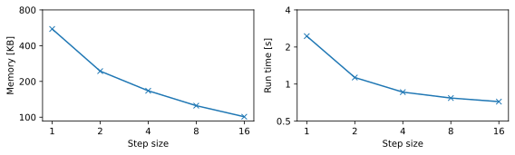

Sometimes, you need to analyze tabular data in a CSV file which is too large to load into memory. In this exercise, we'll build on the last exercise in the previous week and adapt it for a memory constrained environment. Specifically, we will use the chunking functionality from Pandas and PyArrow to process a dataframe in small bits without losing significant performance.
Briefly, the last exercise involved taking a dataframe with weather data from DMI (Danmarks Metereologiske Institut) and computing the total amount of precipitation across all measurement stations. You may find an example solution to this in last week's solutions file on Learn.
The dataframe is at: /dtu/projects/02613_2025/data/dmi/2023_01.csv.zip
Autolab Make a Python program which takes two command line arguments: a path to a Pandas data frame and a chunk size. Compute the total precipitation where you process the dataframe in chunks of the given size - do not load the entire dataframe. Also, do not perform any memory reducing operations (like in week 7). Finally, print the result (and only the result).
Answer: Autolab exercise - answer omitted.
Measure the run time and memory use for chunk sizes 1,000, 10,000, 100,000 and 1,000,000. You can measure the run time and memory use using the /usr/bin/time command as
/usr/bin/time -f"mem=%M KB runtime=%e s" python scipt.py
Perform the measurement as a batch job. Select 1 core and a specific CPU so the results are repeatable. What do you observe? How does the run time compare to the non-chunked version?
Hint: time prints its output to stderr and will be added to the '.err' file. If you want, you can redirect it to stdout by adding 2>&1 at the end of your timing command, e.g, /usr/bin/time <stuff> 2>&1.
Answer: The exact results will depend on your script and chosen CPU. My job script is:
#!/bin/sh
#BSUB -q hpc
#BSUB -J ppandas
#BSUB -n 1
#BSUB -R "span[hosts=1]"
#BSUB -R "rusage[mem=16GB]"
#BSUB -R "select[model == XeonGold6226R]"
#BSUB -W 00:10
#BSUB -o batch_output/precip_pandas_%J.out
#BSUB -e batch_output/precip_pandas_%J.err
# Initialize Python environment
source /dtu/projects/02613_2025/conda/conda_init.sh
conda activate 02613
echo $CPUTYPE
set -e # Stop on first error (because that would mean our script is wrong)
# Loop over chunk sizes
for c in 1000 10000 100000 1000000; do
echo $c
/usr/bin/time -f"mem=%M KB runtime=%e s" \
python precip_pandas.py \
/dtu/projects/02613_2025/data/dmi/2023_01.csv.zip $c \
2>&1 # Magic to redirect stderr to stdour (since time prints to stderr)
done
The output (ignoring everything the batch systems adds) is:
XeonGold6226R
1000
12548.630000000054
mem=131712 KB runtime=27.61 s
10000
12548.629999999994
mem=137628 KB runtime=16.70 s
100000
12548.629999999997
mem=197120 KB runtime=15.92 s
1000000
12548.630000000001
mem=559220 KB runtime=16.50 s
First, notice that (up to rounding errors) all versions get the correct answer. Using a chunksize of 1,000 causes the program to run slower due to the extra overhead. From 10,000 and up the runtime is more or less equal, so we don't lose anything from chunking. As expected, the memory use keeps increasing as the chunksize goes up.
Running another job without chunking gave a run time of 17.19 seconds and a memory use 2040052 KB. So slightly slower than chunking and with much higher memory use!
Convert the CSV file to a chunked parquet file. Use a chunksize of 100,000. Hint: See section 8.3.2 in Fast Python.
Answer: Using the following script (based on the code from Fast Python)
import sys
import pandas as pd
import pyarrow as pa
import pyarrow.parquet as pq
infile = sys.argv[1]
outfile = sys.argv[2]
df_chunks = pd.read_csv(
infile,
dtype={
'parameterId': 'category'
},
chunksize=100_000
)
first = True
writer = None
for chunk in df_chunks:
chunk_table = pa.Table.from_pandas(chunk)
schema = chunk_table.schema
if first:
first = False
writer = pq.ParquetWriter(outfile, schema=schema)
writer.write_table(chunk_table)
writer.close()
we perform the conversion as:
python pandas_to_parquet.py \
/dtu/projects/02613_2025/data/dmi/2023_01.csv.zip dmi_chunks.parquet
Modify your Python program from the previous exercise to receive the path to a chunked parquet file instead of a path to a CSV file. What is the new run time and memory use? As before, perform your measurement with a batch script and make sure you select the same CPU model.
Answer: Python script:
import sys
import pyarrow.parquet as pq
def precip(df):
precip = float(df[df['parameterId'] == 'precip_past10min']['value'].sum())
return precip
if __name__ == '__main__':
fname = sys.argv[1]
ver = sys.argv[2] if len(sys.argv) > 2 else 'chunks'
assert ver in ['chunks', 'all']
if ver == 'chunks':
total = 0
pf = pq.ParquetFile(fname)
for i in range(pf.num_row_groups):
group = pf.read_row_group(i)
#group = pf.read_row_group(i, columns=['parameterId', 'value'])
total += precip(group.to_pandas())
else:
df = pq.read_table(fname).to_pandas()
#df = pq.read_table(fname,
# columns=['parameterId', 'value']).to_pandas()
total = precip(df)
print(total)
My job script was:
#!/bin/sh
#BSUB -q hpc
#BSUB -J pparquet
#BSUB -n 1
#BSUB -R "span[hosts=1]"
#BSUB -R "rusage[mem=16GB]"
#BSUB -R "select[model == XeonGold6226R]"
#BSUB -W 00:10
#BSUB -o batch_output/precip_parquet_%J.out
#BSUB -e batch_output/precip_parquet_%J.err
# Initialize Python environment
source /dtu/projects/02613_2025/conda/conda_init.sh
conda activate 02613
echo $CPUTYPE
/usr/bin/time -f"mem=%M KB runtime=%e s" \
python precip_parquet.py dmi_chunks.parquet \
2>&1 # Magic to redirect stderr to stdour (since time prints to stderr)
The output was:
XeonGold6226R
12548.629999999997
mem=218484 KB runtime=5.09 s
The memory use is more or less the same as our Pandas-based solution, however the run time is about 3x faster.
Finally, modify your program further to only load the relevant columns. What is your final run time?
Answer: Uncomment the relevant lines in the previous script.
Since the precip function only needs to access the paramterId and value columns, we only load those. With PyArrow, this is done with the columns argument to read_table. In Pandas, it is the usecols argument for read_csv.
The output from the modified script was:
XeonGold6226R
12548.629999999997
mem=143160 KB runtime=1.17 s
The memory is now further reduced and we are now down to 1.17 seconds. That is 4.3x faster than if we load all columns and 13.6x faster than using Pandas!
In this exercise, we expand on the exercise from weeks 5 and 6 where we generated the Mandelbrot set by modifying the code to work in a memory constrained environment. We will now store the data in a memory mapped array, which would allow us to generate results larger than memory. For these exercises however, we will stick to sizes which can still fit in order to make the run times manageable.
Autolab Make a Python program that creates an array with the Mandelbrot set. It must take the number as a command line argument. The limits for the real and imaginary values must be the same as in weeks 5 & 6. The program must store the data for the Mandelbrot array in a memory mapped array.
Answer: Autolab exercise - answer omitted.
Parallelize your program for computing the Mandelbrot set in a memory mapped array by modifying your solution from weeks 5 and 6. Each process should write its part of the Mandelbrot array directly to the memory mapped array.
Answer: Code omitted. Combine your code from the previous exercise and the exercises from weeks 5 and 6.
The jobscript is:
#!/bin/sh
### General options
#BSUB -q hpc
#BSUB -J memmap_p
#BSUB -n 32
#BSUB -R "span[hosts=1]"
#BSUB -R "rusage[mem=1GB]"
#BSUB -R "select[model == XeonGold6226R]"
#BSUB -W 00:10
#BSUB -o batch_output/memmap_parallel_%J.out
#BSUB -e batch_output/memmap_parallel_%J.err
# Initialize Python environment
source /dtu/projects/02613_2025/conda/conda_init.sh
conda activate 02613
set -e
ns="1 2 4 8 16 24 32"
echo $ns
for n in $ns; do
echo $n
python mandelbrot_memmap.py 1000 $n
done
The speed-up curve is shown below:

We get a nearly perfect speed-up where almost all the work has been parallelized. The final run time at 32 processes was 0.8 seconds. The fastest run time from the RAM implementation from weeks 5 and 6 was 0.9 seconds, meaning their run times are comparable.
Autolab Make a Python program which reads the saved Mandelbrot array, downsamples it, and saves the result as a PNG image. It must take three command line arguments: the path to the saved Mandelbrot array from exercise 2.1, the size of the array and an integer step length . It must then open the specified array as a NumPy memmap, load every th row and column, and then save the resulting array as a PNG file. Hint: see the example code from exercise 3 in week 5.
Example: Assume the path is to the following array: Given a step length of , the downsampled array is Given a step length of , the downsampled array is
Answer: Autolab exercise - answer omitted.
At /dtu/projects/02613_2025/data/mandelbrot/mandelbrot.raw is a file with a Mandelbrot set array. Run the downsampling program on this array for the step lengths 1, 2, 4, 8, 16. If you hardcoded the size of the memory mapped array , remember to change it.
Measure the run time and peak memory use with the /usr/bin/time command. Plot the results. Perform the measurements as a batch job and select a CPU model so the results are repeatable. What happens to the memory and run time as the step length increases?
Answer: The jobscript is:
#!/bin/sh
### General options
#BSUB -q hpc
#BSUB -J mandelpic
#BSUB -n 1
#BSUB -R "span[hosts=1]"
#BSUB -R "rusage[mem=2GB]"
#BSUB -R "select[model == XeonGold6226R]"
#BSUB -W 00:10
#BSUB -o batch_output/mandelbrot_pic_%J.out
#BSUB -e batch_output/mandelbrot_pic_%J.err
# Initialize Python environment
source /dtu/projects/02613_2025/conda/conda_init.sh
conda activate 02613
for n in 1 2 4 8 16; do
echo $n
/usr/bin/time -f"mem=%M KB runtime=%e s" \
python mandelbrot_memmap_pic.py \
/dtu/projects/02613_2025/data/mandelbrot/mandelbrot.raw $n \
2>&1
done
The exact results for run time will of course depend on the chosen CPU. Plotting the memory and run time for my results, we get:

As the step size increases, both the run time and memory use decreases. This is what we should expect since we are reading less data each time. Importantly, it shows that the entire array is not read into memory - only the parts we need are read.
Autolab Make a Python program that creates a Zarr array containing the Mandelbrot set. The size of the array must be . The program must take two command line arguments. The size of the array and a positive integer which is the size of the chunks. Structure your program so it fills out the chunks one at a time.
Answer: Autolab exercise - answer omitted.
Parallelize your program using multiprocessing. Each process should fill one chunk of the Zarr array.
Answer: Code omitted. Combine your code from the previous exercise and the exercises from weeks 5 and 6.
Time the runtime of the program for array size 1000 and chunk sizes 10, 25, 50, 100 and 200. Your program should make a process for each available core, e.g., for a processor with 32 cores use 32 processes. Run your timing as a batch job where you specify a CPU model so your result is repeatable.
What happens with the run times? What chunk size gives the fastest execution?
What happens with the size of the saved Zarr array? What chunk size gives the smallest result? Hint: since the Zarr array is saved in a directory you can measure its size with the command du -sh <filename>.zarr.
Answer: The batch job is:
#!/bin/sh
#BSUB -q hpc
#BSUB -J zarr
#BSUB -n 24
#BSUB -R "span[hosts=1]"
#BSUB -R "rusage[mem=1GB]"
#BSUB -R "select[model == XeonGold6226R]"
#BSUB -W 00:10
#BSUB -o batch_output/zarr_%J.out
#BSUB -e batch_output/zarr_%J.err
# Initialize Python environment
source /dtu/projects/02613_2025/conda/conda_init.sh
conda activate 02613
set -e
ns="10 25 50 100 200"
echo $ns
for n in $ns; do
echo $n
python mandelbrot_zarr.py 1000 <math xmlns="http://www.w3.org/1998/Math/MathML" display="inline"><mrow><mi>n</mi></mrow></math>(cpucount) mandelbrot_${LSB_JOBID}.zarr
du -sh mandelbrot_${LSB_JOBID}.zarr
done
The results will depend on your exact CPU model but should be comparable. The relevant output is:
10
24.195096358074807
285M mandelbrot_20374403.zarr
25
3.589769379934296
38M mandelbrot_20374403.zarr
50
1.0674782870337367
9.5M mandelbrot_20374403.zarr
100
1.2522114539751783
2.4M mandelbrot_20374403.zarr
200
4.268210542970337
656K mandelbrot_20374403.zarr
We get the fastest run time with a chunk size of . If the chunk size is too small we get a larger run time, likely because we add too much overhead. If the chunk size is too large we also get a larger run time, likely because the computation cannot be parallelized effectively, c.f., the analysis from weeks 5 and 6.
Increasing the chunk size reduces the stored array size because Zarr employs compression for each stored chunk. In regions away from the Mandelbrot set boundary, values tend to be uniform, which allows for efficient compression. Larger chunks improve compression efficiency by representing larger areas without significantly increasing storage space per chunk.
In comparison, the memmap raw array takes up 5.3 MB. For a chunk size of 100, which runs almost as fast as the fastest chunk size, we use less than half of the storage at 2.4 MB.
How does the performance compare with your memmap implementation?
Answer: The memmap implementation solved the task in 0.8 seconds with 32 threads. The fastest Zarr implementation uses 1.1 seconds with 32 threads so is slightly slower. However, with Zarr, we can store the result with significantly less disk space if we are willing to sacrifice some run time. As the size of data grow ever larger, this trade-off becomes worth considering.